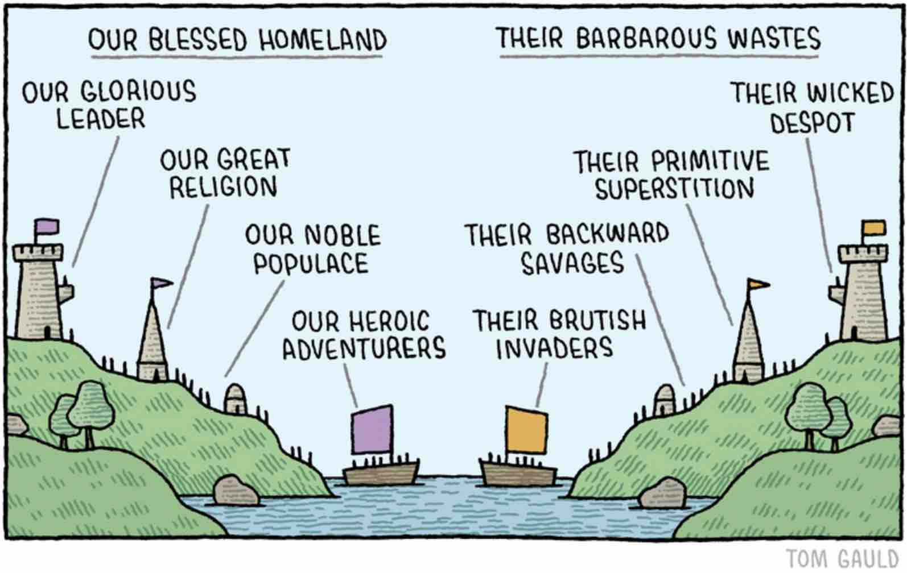

Birds of a feather flock together. K-Nearest Neighbours turns that proverb into an algorithm. Gleich und Gleich gesellt sich gern. K-Nächste-Nachbarn macht dieses Sprichwort zum Algorithmus.

The ancient and glorious nation of BLOBOVIA, blessed with noble populace, heroic adventurers, and a glorious leader, has long endured the proximity of SPLOTCHIA, a barbarous waste governed by a wicked despot and populated by brutish invaders.
Die uralte und ruhmreiche Nation BLOBOVIEN ist gesegnet mit edler Bevölkerung, heldenhaften Abenteurern und einem glorreichen Anführer. Seit jeher erträgt sie die Nachbarschaft von SPLOTSCHIEN, einer barbarischen Wüstenei. Dort herrscht ein ruchloser Despot über rohe Eindringlinge.
The contested borderlands shall be decided not by cannon nor sword, but by the sacred algorithm of K-Nearest Neighbours: a village belongs to whichever nation has the most settlements nearby. Place your dots. The land remembers its neighbours.
Über die umstrittenen Grenzgebiete entscheiden weder Kanonen noch Schwerter. Es entscheidet der heilige Algorithmus der K-Nächsten-Nachbarn. Ein Dorf gehört der Nation mit den meisten Siedlungen in der Nähe. Setz deine Punkte. Das Land erinnert sich an seine Nachbarn.
Each side receives 5 founding settlements, placed at random by the cartographers' office. Then 10 moves to claim territory. The dot you place will fly the flag of whichever nation the classifier assigns to that location.
Jede Seite erhält 5 Gründungssiedlungen, zufällig vom Kartenamt platziert. Dann folgen 10 Züge, um Gebiet zu beanspruchen. Der Punkt, den du setzt, zeigt die Flagge der Nation, die der Klassifikator für diesen Ort bestimmt.
K-Nearest Neighbours is one of the oldest and most intuitive ideas in machine learning. It makes no assumptions about the shape of the world. It stores no trained weights. It simply asks: what are my neighbours doing?
K-Nächste-Nachbarn ist eine der ältesten und einfachsten Ideen im maschinellen Lernen. Der Algorithmus macht keine Annahmen über die Struktur der Daten. Er fragt nur: Was machen meine Nachbarn?
"Tell me who your neighbours are, and I will tell you who you are." „Sag mir, wer deine Nachbarn sind, und ich sage dir, wer du bist.“ , folk proverb, adapted for machine learning Sprichwort, für das maschinelle Lernen abgewandelt
"Nearest" depends on how you measure. Three different rulers produce three different territory maps from the same dots. Click a card to switch, the demo and the game update immediately.
„Nächste“ hängt davon ab, wie du misst. Drei verschiedene Maßstäbe erzeugen aus denselben Punkten drei verschiedene Karten. Klick auf eine Karte, um zu wechseln. Demo und Spiel passen sich sofort an.
Five founding settlements per side, placed randomly by the cartographers' office. Then ten moves total, five per player. When you place a dot, K-NN immediately classifies it: the dot flies the flag of whichever nation controls that location in the current model. Your goal is to control the most territory when the moves run out.
Fünf Gründungssiedlungen pro Seite, zufällig vom Kartenamt platziert. Dann zehn Züge insgesamt, also fünf pro Spielerin. Setzt du einen Punkt, klassifiziert K-NN ihn sofort. Der Punkt zeigt dann die Flagge der Nation, die diesen Ort im aktuellen Modell kontrolliert. Dein Ziel: am Ende das meiste Gebiet kontrollieren.